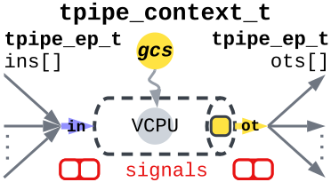
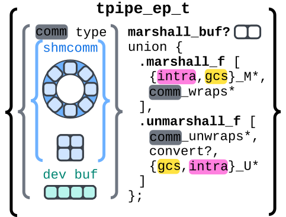
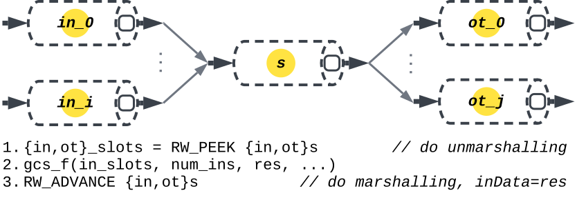
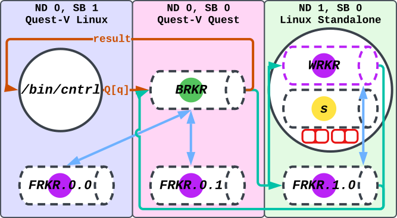
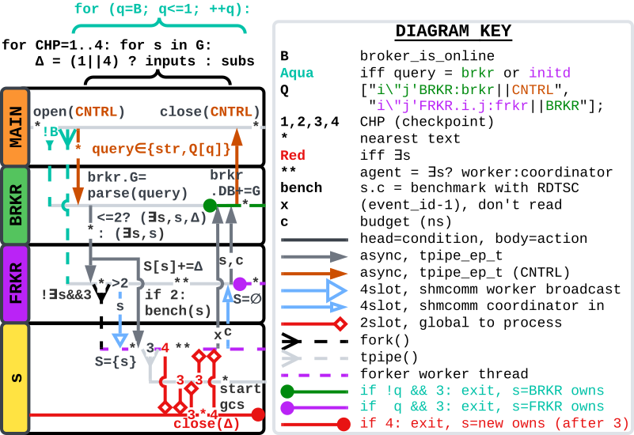
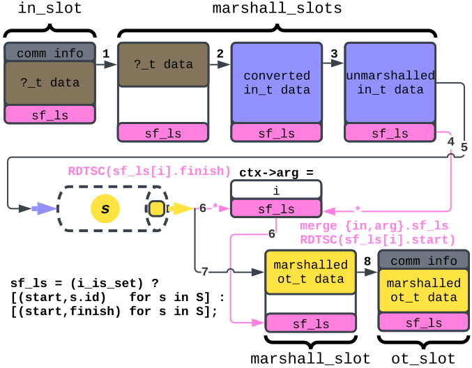
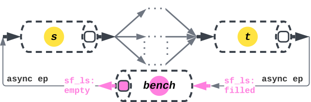
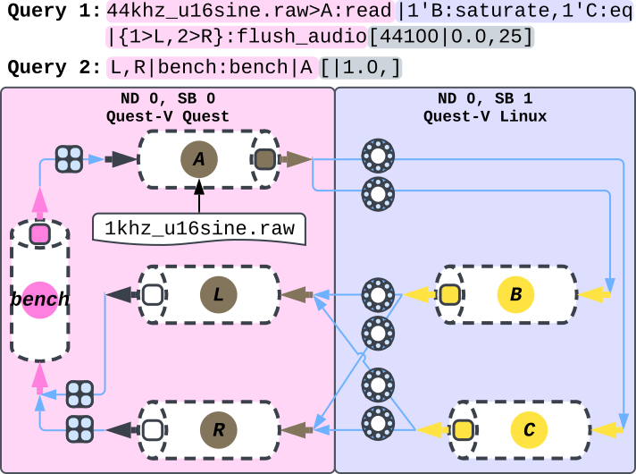
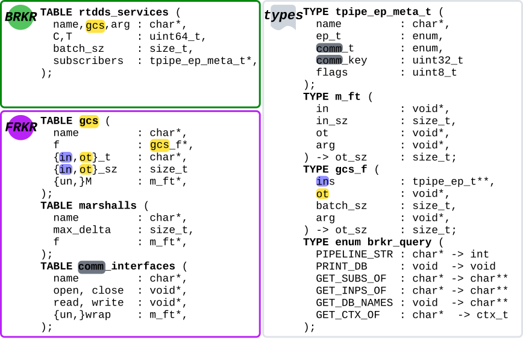
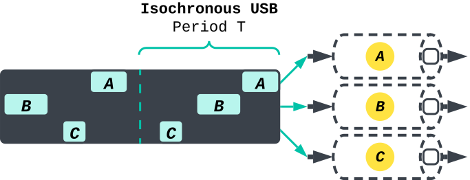

RT-DDS Overview
| ../ | RT-DDS Overview |
Introduction
General Overview
This document serves as an overview for RT-DDS (Real-Time Data Distribution Service), which is a pub-sub framework for scheduling pipelines of services to meet the following hard real-time Quality of Service (QoS) guarantees on end-to-end:
- throughput (tput),
- latency (latn), and
- data loss (loss).
This DDS works on the following platforms and can subscribe services across them (e.g. service A in Linux subscribes to service B in Quest):
- Standalone Ubuntu Linux
- Standalone Quest
- Quest guest on Quest-V Hypervisor
- Linux guest on Quest-V Hypervisor
The two primary goals of this document are to:
- Familiarize the reader with the design logic
- Show the reader how to use the API — both for creating pipelines with existing RT-DDS infrastructure, and for porting their applications to the framework.
Therefore, minute implementation details of the DDS may be omitted; however, the overall logic is captured.
Formatting and abbreviation
All coloring is consistent throughout, and all graphics are scalable vector graphics (SVGs), allowing for zoom without quality loss. Additionally, each definition, often paired with an abbreviation, is presented in the format: name (abbreviation).
Tuned Pipes (tpipes)
Computational Model
Every service in RT-DDS is associated with a tuned pipe (tpipe). A tpipe is a pthread possibly bound to a virtual CPU (Quest, VCPU) or SCHED_DEADLINE server (Linux) with budget C and period T (in nanoseconds). It has a single input endpoint and a single output endpoint. A tpipe may connect its input endpoint to multiple publishers output endpoints by subscribing through the broker, and other tpipes may subscribe to its output endpoint in the same manner.

Figure 1: tpipe context.
Tpipe Endpoints - Inputs and Subscribers
The tpipe_endpoint (tpipe_ep_t) allows for subscriptions across communication types (e.g. shared memory communication (shmcomm) or USB) via a unified interface. The subscriber specifies the communication type. Currently, only shmcomm is supported, with two buffering semantics:
- FIFO ring: synchronous, lossless
- 4slot: asynchronous, freshest data
The tpipe_ep_t also handles marshalling and unmarshalling. Since data types and communication types may differ, each endpoint includes an ordered list of marshall functions to manage communication header wrapping/unwrapping, data conversion, transforms and filters, as well as intra-marshalling of metadata.

Figure 2: A tpipe_ep_t
Gather-Compute-Scatter (gcs)
GCS(gcs_sum_u16, /* name */ uint16_t, /* in type (post-conversion) */ uint16_t, /* out type */ {unmarshall1, unmarshall2, ...}, /* unmarshall funcs */ {marshall1, marshall2, ...}, /* marshall funcs */ {float_to_u16, uint32_to_u16}) /* allowed unmarshall conversions */ { uint16_t *in, *out; PER_SLOT { /* foreach input slot */ PER_EL { /* if batch_sz > 1, multiple elements in slot */ out[el] *= (slot > 0); out[el] += in[el]; } } return out_slot_size; /* size of data processed */ }
If you want to port your application to RT-DDS you must write all functions as gcs functions with minimal branching for pipelines with QoS, to allow for RT-DDS to benchmark accurate budgets for each service. The new gcs functions need to either be
- added to the
libgcsglobal index of gcs functions and recompiled, or - if the platform supports shared objects, then compiled into a
shared object. The user can then specify in their runtime API
request
/path/to/userlib.so.function_name.arg>service_name:gcs_dl_open.
Calling tpipe_gcs() gathers all inputs and subscriber buffers by
calling tpipe_ep_read(..., RW_PEEK) or tpipe_write(...,
RW_PEEK). If gathering succeeds, it runs the gcs function, then
scatters the output to subscribers and updates endpoint states with
RW_ADVANCE (e.g. incrementing the position in a FIFO ring).

Figure 3: tpipe_gcs()
Agents: Broker, Forker
Agent overview
RT-DDS uses several agents across sandboxes/nodes:
- Exactly one Broker (BRKR)
- Exactly one Forker (FRKR) per sandbox
- At most one thread querying the broker (e.g. /bin/cntrl)
All agents are bound to tpipes with no QoS (best-effort scheduling).
When a service is forked, the child contains the service tpipe and a child FRKR thread. The child FRKR reassigns itself as a WRKR. If the broker is queried to update this service, the broker notifies the coordinator FRKR, which wakes the WRKR to create a new version and swap it with the old.

Figure 4: RT-DDS agents
Figure 5, deepens the understanding from figure 4, covering the logic for use cases of instantiating:
- BRKR and FRKR for sandbox (!B)
- FRKR for sandbox (B)
- Service creation (!∃s)
- Service updates (∃s)
RT-DDS applies the logic from 3 and 4 to also do 1 and 2, ensuring service isolation and dynamic updates via WRKR daemons.
Agent coordination

Figure 5: RT-DDS agent swimlane logic.
Benchmarking
Checkpoint 2 (figure 5) involves benchmarking
each service individually using the read timestamp counter (rdtsc)
opcode, after all of its inputs and subscribers have been
initialized. This is done using the tpipe_gcs() function, where each
tpipe_ep_{read,write} call is made with RW_REPLAY, ensuring
deterministic behavior by always operating on the same slot and never
failing. The benchmarking continues until either the estimated
performance stabilizes—meaning the confidence interval stops shrinking
significantly—or we become statistically confident (at the 95% level)
that the average execution time is within a ±1000 nanosecond margin of
error.
Scheduling
We assume phase-alignment and calculate the periods and batch_sz for a pipeline in the broker. However, you can recompile RT-DDS to use your own scheduling algorithm given the dataflow graph and [tput|loss,latn] QoS. Table 1 and listing 2 detail the current scheduling heuristics.
| Value | >0 | 0 |
| latn | VCPU with C/T | Best-effort VCPU |
| loss | comm_flags=ASYNC; T_stage1 = x, T_not_stage1 = y | comm_flags=SYNC; T = latn / num_stages |
| tput | Scale batch_sz until batch_sz / (min(T) * 1e-9 s/ns) ≥ tput | batch_sz = 1 |
It is important to note that scaling batch\_sz to match throughput is the final step of the scheduling algorithm because this does not change the period of each service, only the budget.
INPUT: Pipeline with k stages, l (latn), r (loss)
OUTPUT: Period T_{stage_1}=x for stage 1 services and
Period T_{note_stage1}=y for rest
SYSTEM OF EQUATIONS:
1 - x/y <= r
1 - x/y = r
x + (k-1)*y <= l
x + (k-1)*y = l
SOLVE:
x = -(r-1)*y
-(r-1)*y + (k-1)*y = l
SOLUTION:
y = l/(-(r-1) + (k-1)) = l/(k-r)
plug y in to get x:
x = -(r-1)*y
Other observations
Two non-trivial observations of figure 5 are that (1) we can instantiate cyclic pipelines because of the checkpointing in CHP1:open(CREAT) all inputs then CHP2:open(CONNECT) all subscribers, and (2) the downtime between swapping an old service out for a new one is 2T in the best case and 4T in the worst case due to phase-alignment; the red CHP3 is like a pipeline of rate matched s_new->s_old->s_new. Upon swapping at CHP3 with s_new, s_old destroys its VCPU.
Marshalling
Inputs may not match the expected out_type, but conversions can
allow reuse (e.g. u16_sum_u16 accepts uint8_t or float,
converting them to uint16_t). Each gcs has a list of legal
conversions, and RT-DDS only creates subscriptions if the subscriber
can convert the publisher's output type to its own input type - if
they don't already match.
Marshalling may:
- Wrap/unwrap communication medium info (e.g. USB headers)
- Benchmark pipelines via intra-marshalling (passing (start, finish) tuples)
- Perform filters or transforms associated with the tpipe's gcs function.

Figure 6: Marshalling
In figure 6, intra marshalling is made possible by keeping state in the tpipe_context (ctx). The "for s in S" has S as either every service in the pipeline or just the source and sink. This can be configured by the user through the RT-DDS API. Figure 7 shows a generic implmenetation of benchmarking an RT-DDS pipeline.

Figure 7: Benchmarking an arbitrary pipeline. Because service "bench" has asynchronous interaction with the pipeline, it doesn't cause blocking.
Examples
CNTRL_USAGE: ./rtdds_cntrl RTDDS_PIPELINE_STR
() = Pipeline scope; last service continues flow
{} = bash-like expansion
> = Delimiters for argument. Can be applied to service or scope
>> = Concat service arg with scope-level arg
" = Node id; prefix with digit
' = Sandbox id; prefix with digit
: = Bind to gcs
, = List
| = Pipe. Can have two consecutive for bidirectional subscription.
; = Delimit pipeline clause. Can reference earlier services
! = Remove services/subscriptions, applies to entire clause
[tput|loss,latn] = Pipeline QoS (at end of string)
-> tput : uint64_t, elements per second
-> loss : float∈[0,1], for ASYNC communication
-> latn : uint64_t, microseconds; default = 0, i.e. best-effort
Figure 8 is an example of the resulting state
from two pipeline string queries to the broker over the public control
channel. Each tpipe_ep_t is colored as shmcomm (blue) and has the
corresponding buffer type: 4slot or FIFO ring. This figure is similar
to the boomerang work of having pipelines go into a sandbox from one
then back into the starting sandbox.

Figure 8: Losless stereo Digital Signal Processing (DSP) pipeline at 44kHz with 25 microsecond end-to-end latency. We benchmark the pipeline with RT-DDS service bench, which has no QoS (assigned to best-effort OS scheduler) and a 100% loss rate to signify it uses async communication. This percent value can be any non-zero value.
State: Tables and Types
All GCS functions and marshall functions are in constant, global tables with corresponding metadata information coupled for run-time type-checking and proper buffer-sizing. Figure 9 details these tables.

Figure 9: RT-DDS State tables and types. There are minor things omitted such as physical CPU, VCPU, and tpipe ids in the rtdds_services table. The point is to capture the logic. The comm_interfaces all implement the same functions to support a generic tpipe_ep_function() call.
The RT-DDS broker's table of rtdds_services is relly the RT-DDS database (DB). It is implemented using a nested adjacency list using hashmaps for O(1) updates.
Future Direction
Isochronous USB
Previously, it was stated that there was support for cross-node pipelines. This is not yet implemented. Additionally, we want to be able to multiple schedule USB transfers on the same link using rate-monotonic-scheduling (RMS), which we can do with isochronous endpoints. This should later be implemented.

Figure 10: Isochronous USB endpoints